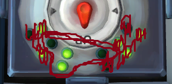
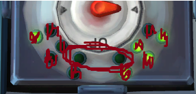

On the Subject of Knobs
Needlessly complicated and endlessly needy. Imagine if such expertise were used to make something other than diabolical puzzles.
You can determine the knob’s position by looking at only 4 lights
Up
Left
Right

Needlessly complicated and endlessly needy. Imagine if such expertise were used to make something other than diabolical puzzles.
You can determine the knob’s position by looking at only 4 lights